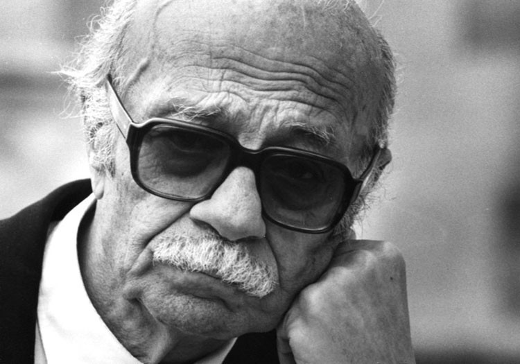

Mi-am propus să ofer în fiecare zi conținut nou: o recomandare de carte, de melodie, o biografie de autor, un citat, o glumă... Astăzi este rîndul:

Fizician la origine, argentinianul Ernesto Sabato (1911 — 2011) a renunțat la cariera academică pentru pictură și literatură. În afară de eseuri, opera sa literară este concentrată în 3 romane, Tunelul (1948), Despre eroi și morminte (1961) și Abaddon exterminatorul (1974).Temele literare principale sînt din sfera existențialismului, astfel că Sabato a primit aprecieri de la Albert Camus și Thomas Mann în timpul vieții, iar intensitatea sentimentelor și a angoasei pe care o relevă romanele sale îl fac un scriitor a cărui operă vreau să o aprofundez.
Tunelul prezintă un pictor care povestește cum a ajuns să o ucidă pe o femeie într-o desfășurare absurdă de evenimente. Femeia a fost singura care a remarcat un detaliu dintr-un tablou al pictorului, lucru care l-a făcut să devină obsedat de ea și să o urmărească, să ajungă să-i declare iubire totală, deși femeia era căsătorită, iar exacerbarea tuturor sentimentelor și obsesiilor pictorului îl fac, în final, să o ucidă.
Lectura nu este ușoară, multe din efuziunile pictorului sînt de neînțeles, dar, privind în ansamblu, Tunelul este un roman absurd remarcabil.